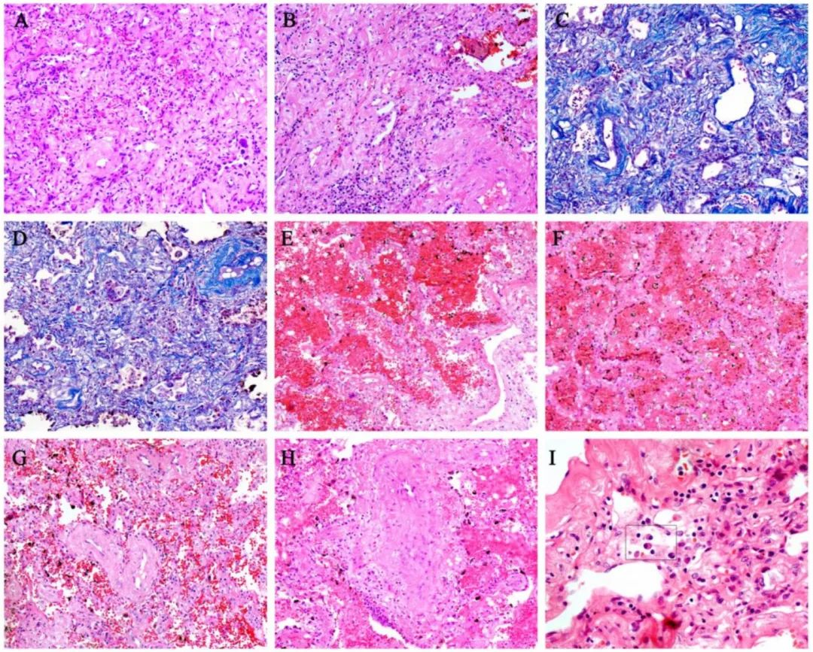
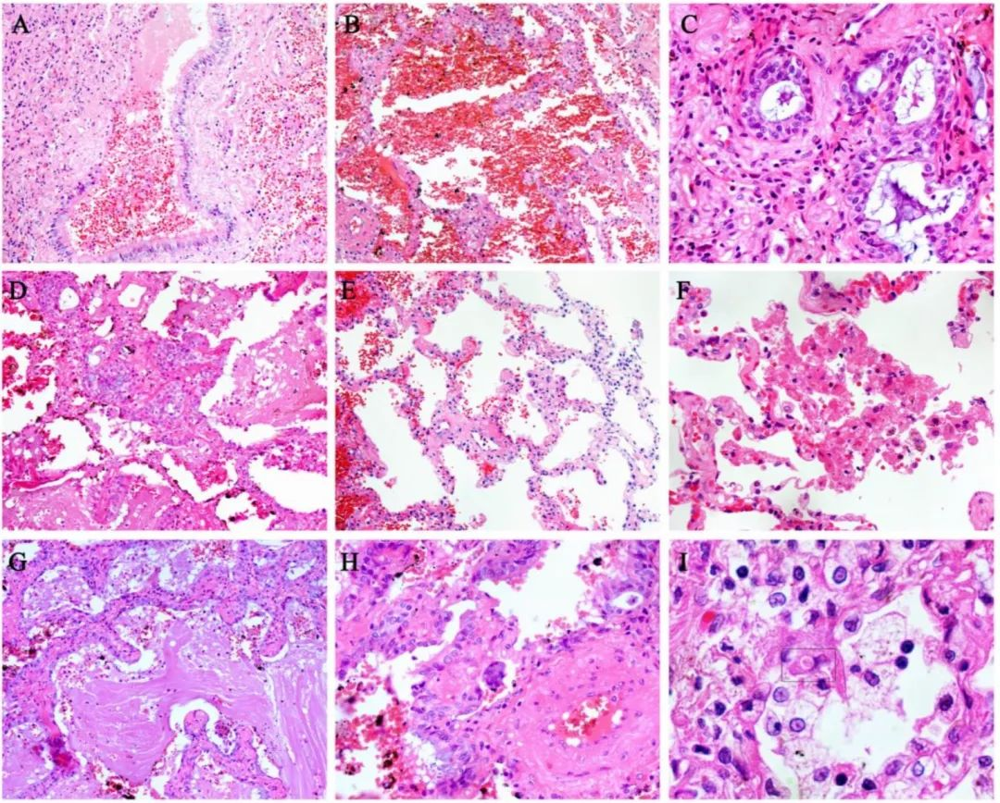
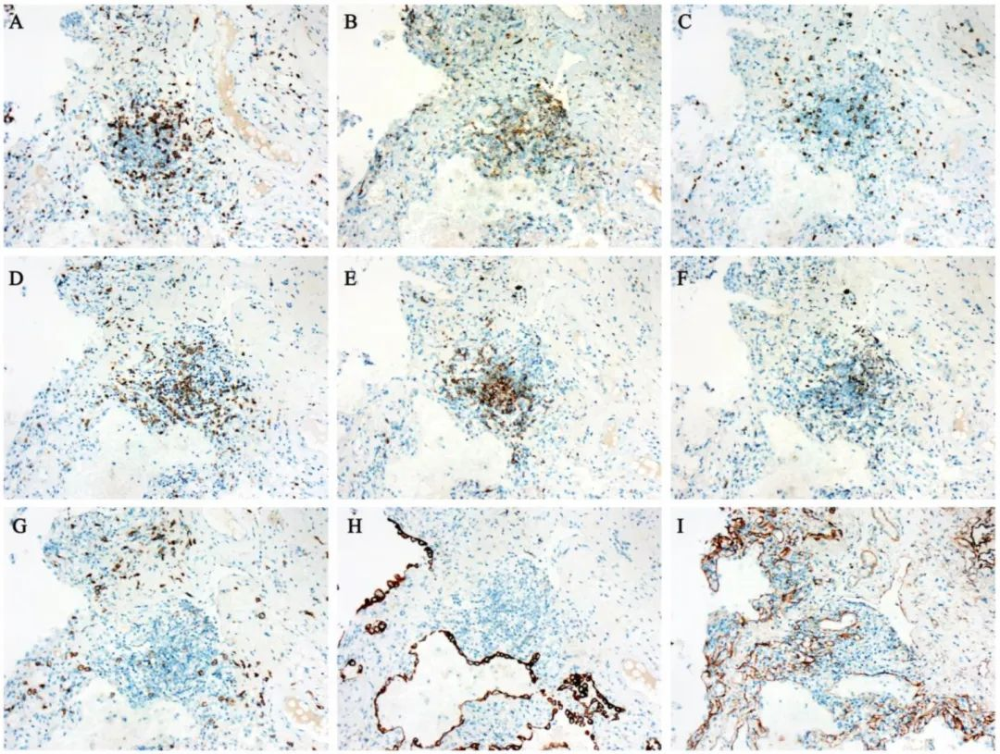

钟南山领衔在顶级医学期刊发文，回应超长潜伏期
原文链接 备份链接 澎湃新闻记者 贺梨萍 当地时间2月28日，由国家卫健委高级别专家组组长、中国工程院院士钟南山领衔的“中国2019新型冠状病毒疾病的临床特征”研究论文在顶级医学期刊《新英格兰医学杂志》（NEJM）上在线公开发表。该研究纳 …
澎湃新闻记者 贺梨萍
●文内有图片可能引起不适 ●
新冠肺炎病理目前仍有待深入研究。除华中科技大学刘良等人实施的遗体解剖之外，部分科研团队也在从组织活检渠道获取病理分析。中科院院士、国家感染性疾病临床医学研究中心主任王福生教授率领的团队，武汉大学中南医院肖书渊主任医师团队此前也均发布相关病理发现。
当地时间3月2日，深圳市第三人民医院（南方科技大学第二附属医院）、国家感染性疾病临床医学研究中心的研究团队在预印本网站Preprints更新发布了“新型冠状病毒肺炎危重症患者的临床病理分析”（Clinical pathology of critical patient with novel coronavirus pneumonia (COVID-19)，最早于2月27日发布第一版），该研究尚未经同行评议。
研究团队对1例进行了肺移植手术的危重症新冠肺炎患者的全肺进行了活检，通过HE染色、免疫组织化学染色和特殊染色(包括Masson染色、PAS染色和六胺银染色)对其病理变化进行了描述。全肺组织呈弥漫性充血或部分出血坏死。右肺右叶外缘明显可见出血性坏死。肺切面有严重的充血和出血改变。
研究团队称，他们首次描述了新冠肺炎危重症患者的主要病理变化。该研究展示了危重症患者的临床病理活检，这可能为深入了解该病的发病机制和严重程度提供了依据。
该论文通讯作者之一为深圳市第三人民医院院长兼党委书记、主任医师刘磊教授。据医院官网介绍，国家感染性疾病临床医学研究中心、深圳市第三人民医院是深圳唯一收治新冠肺炎确诊患者的定点医院，也是除湖北省外，单中心收治新冠肺炎患者最多的医院。此外，医院拥有占地面积391平方米的P3实验室，具有开展新冠病毒肺炎系列研究的临床资源和研究综合条件。
截至目前，关于流行病学和临床特征的研究已不断累积。多数患者出现发热、咳嗽等症状，但小部分患者出现急性呼吸衰竭、急性呼吸窘迫综合征(ARDS)、感染性休克等严重并发症。值得注意的是，目前来看，新冠肺炎的危重症患者预后差，死亡率高。
研究中这例患者66岁，2020年1月4日从武汉返回深圳，并出现高热和咳嗽症状。除8年高血压病史外，无其他基础疾病，心功能良好。胸部X线检查可见左右肺亮度增高、多发阴影。该例患者被诊断为新冠肺炎（危重型）和严重ARDS，并发呼吸衰竭，行肺移植手术。
研究团队在P3实验室对肺病理组织进行了固定、脱水、石蜡包埋、组织切片、特殊组织化学染色等。

右肺（A、B）、左肺（C、D）大体形态，右肺边缘明显出血坏死。
结果显示，该病例全肺表面呈古铜色，肉眼可见弥漫性充血，多为点状出血，部分出血坏死。值得注意的是，出血坏死主要发生在肺右下叶、中叶和上叶的外边缘。支气管被粘液和出血渗出物覆盖。肺切面有严重的充血和出血改变。
组织病理学表现为大量的肺间质纤维化伴部分透明变性，肺出血性梗死。小血管增生，血管壁增厚，管腔狭窄闭塞。炎症细胞间质浸润，包括淋巴细胞、浆细胞和单核细胞。经Masson染色证实肺间质纤维化。未见其他细菌、真菌感染。

危重病人肺间质组织病理活检：A、大量肺间质纤维化。B、肺间质纤维化伴部分透明变性。C、Masson染色肺间质纤维化。D、Masson染色间质纤维化，肺泡上皮细胞脱屑。E、肺出血改变。F、肺出血性梗死。G、血管壁增厚，管腔狭窄。H、闭塞性脉管炎由炎性细胞包围。I、间质浆细胞浸润（方框示意）。
可见肺泡炎伴肺泡上皮细胞(主要为II型)的萎缩、增殖、脱屑及鳞状上皮化生的各种改变。其余肺泡显示肺泡隔增厚，肺泡上皮细胞坏死、脱屑。此外，还观察到大量纤维素样渗出物、多核巨细胞和胞浆内病毒包涵体。坏死性细支气管炎表现为细支气管壁坏死，管腔内可见上皮细胞。

COVID-19肺泡改变活检。A、坏死性细支气管炎，腔内可见坏死的支气管上皮细胞。B、肺泡上皮细胞萎缩。C、细支气管上皮细胞鳞状上皮化生。D、肺泡细胞鳞状上皮化生。E、肺泡隔增厚。F、肺泡上皮细胞坏死、脱屑。G、腔内有炎性细胞和大量纤维素样渗出物。H、多核巨细胞。I、肺泡上皮细胞胞浆内病毒包涵体（方框示意）。
免疫组织学结果显示，CD3、CD4、CD8、CD20、CD79a、CD5和CD38等免疫细胞呈阳性。研究发现免疫细胞的阳性表达主要集中在肺间质和血管附近。此外，CD31、TTF1、CK5/6、CK7、CK19、SMA、F VIII和IV型胶原也呈阳性（部分数据未显示）。

危重症COVID-19免疫组织学结果。连续组织切片显示CD3 (A)、CD4 (B)、CD8 ©、CD20 (D)、CD79a (E)、CD5 (F)、CD38 (G)、CK7 (H)、IV型胶原（I）阳性表达。
研究团队在讨论环节指出，在SARS的肺病理学方面，此前有课题组发现了局部出血坏死、肺泡炎和支气管炎、肺泡上皮细胞脱屑等肺部病变。实际上，在这项研究中，结果也显示了肺泡水肿伴出血、细支气管炎、肺泡炎伴上皮细胞炎性损伤等肺部损害。值得注意的是，在显微镜下研究团队观察到大量的肺间质纤维化、管壁增厚、管腔狭窄和闭塞发生较多。
研究团队推测，这些主要的改变可能导致危重病人出现严重的呼吸衰竭。
另一方面，目前大体观察发现出血性坏死主要存在于右肺外缘。这一观察提示以下两点：第一，这可能是重症患者死亡的主要原因之一；第二，COVID-19的主要病变可能首先起源于此。
另外，最近的研究也表明，新冠病毒与SARS-CoV具有相同的细胞进入受体，即ACE2（血管紧张素转化酶II）。一般情况下，ACE2蛋白在肺泡细胞、支气管上皮和血管内皮细胞中表达，因此与SARS-CoV-2感染结合ACE2会导致急性肺损伤和肺水肿。研究团队此次也观察到大量肺水肿和出血，脱落支气管和肺泡上皮细胞。
另一方面，细胞因子风暴与过度免疫反应和不受控制的促炎反应有关，后者则会导致严重的器官疾病，包括肺损伤。目前几个代表性的细胞因子已确定，包括IL-1β、IL-18、TNF-α、IL-6、IL-8和IL-10，这些均由包括CD8和CD4的各种免疫细胞产生和调节。
值得一提的是，研究团队观察到淋巴细胞、单核细胞和浆细胞浸润肺间质，这些类型的炎症细胞都经免疫组织学方法证实。而如前所述，肺间质大量纤维化、管腔狭窄等病理改变发生在该病例的肺部，研究团队认为，这些结果可以解释为什么危重病人有急性肺功能障碍。
本期编辑 常琛
推荐阅读


原文链接 备份链接 澎湃新闻记者 贺梨萍 当地时间2月28日，由国家卫健委高级别专家组组长、中国工程院院士钟南山领衔的“中国2019新型冠状病毒疾病的临床特征”研究论文在顶级医学期刊《新英格兰医学杂志》（NEJM）上在线公开发表。该研究纳 …
原文链接 备份链接 已经致7.8万多人感染、2700多人死亡的新冠病毒到底长什么模样？它又将何去何从？ 近期，世界各地病毒实验室里的“病毒猎手”们借助冷冻电镜技术，得以管窥其真容。他们给新冠病毒拍了大分子高清照片，看清楚它的分子级别的结 …
原文链接 备份链接 澎湃新闻记者 张若婷 贺梨萍 当地时间2月27日，一项由国家卫健委高级别专家组组长、中国工程院院士钟南山团队领衔的题为“Comorbidity and its impact on 1590 patients with …
原文链接 备份链接 澎湃新闻记者 贺梨萍 张若婷 在法律政策允许并征得患者家属同意后，第一例、第二例新冠肺炎逝者遗体解剖工作已于2月16日在武汉市金银潭医院完成。2月16日至2月24日，由刘良及附属同济医院病理科王国平教授领衔的华中科技大 …
原文链接 备份链接 柯溢能 / 微信公众号“浙江大学” 新冠病毒除了呼吸道传播以外，是否还有其他途径，这一直是科研人员关心的热点问题。 2月26日，浙江大学医学院附属第一院副院长、眼科学科带头人沈晔教授团队，在《医学病毒学杂 …